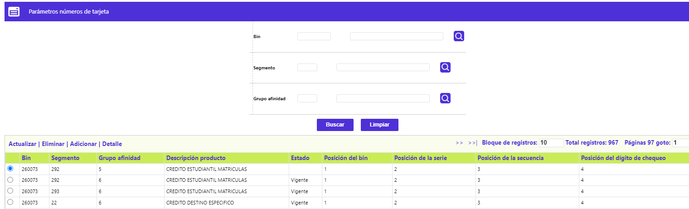
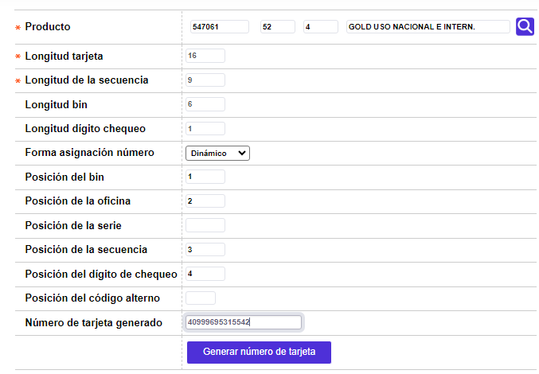
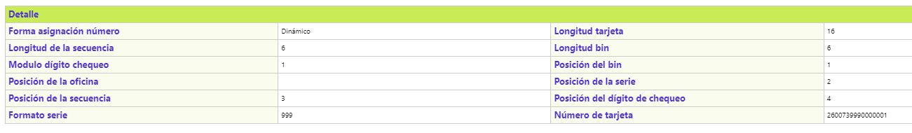

Parámetros número de tarjeta
Mediante esta función se habilita el mantenimiento y consulta de la tabla que contiene las condiciones bajo las cuales se generan, de manera única, los números de las tarjetas para cada producto (Bin, segmento y grupo de afinidad), información que es almacenada en el evento en que dichas condiciones varíen.

El formulario contiene los enlaces: Actualizar,Eliminar, Adicionar y Detalle.
Adicionar: Al activar ese enlace se despliega un nuevo formulario.
Descripción de campos
Producto |
Campo obligatorio con lista de valores de la cual se selecciona el producto (Bin, segmento, grupo de afinidad) para el cula se van a definir los parámetros del número de tarjeta. |
Estado |
En este campo se selecciona entre Nulo, Vigente o Histórico para determinar por la relación entre los diferentes registros para el mismo producto. |
Longitud tarjeta |
Campo de salida, que indica la cantidad máxima de dígitos que contiene el número de la tarjeta, incluidos, entre otros, el bin y el dígito de chequeo, de acuerdo con lo parametrizado en la opción definición de bines. |
Longitud de la secuencia |
Campo de salida, que indica la cantidad máxima de dígitos que contiene la secuencia de la tarjeta, de acuerdo con lo parametrizado en la opción definición de bines. |
Longitu bin |
Campo de salida, que indica la cantidad máxima de dígitos que contiene el bin, de acuerdo con lo parametrizado en la opción definición de bines. |
Longitud dígito chequeo |
Campo de salida, que indica la cantidad de dígitos que conforman el dígito de chequeo, de acuerdo con lo parametrizado en la opción definición de bines. |
Forma asignación número |
Este campo contiene un combo con las opciones Dinámico o Secuencial, para seleccionar la manera como la entidad desea que sean generados los números de las tarjetas por producto. Dinámico indica que se hará aletaoriamente y Secuencial que se hará siguiendo un orden consecutivo. |
Posición del bin |
En este campo se puede ingresar un número del 1 al 5 para indicar la posición que ocupará el bin dentro del número de la tarjeta |
Posición de la oficina |
En este campo se puede ingresar un número del 1 al 5 para indicar la posición que ocupará el código de la oficina dentro del número de la tarjeta. |
Posición de la serie |
En este campo se puede ingresar un número del 1 al 5 para indicar la posición que ocupará la serie definida para el producto dentro del número de la tarjeta. |
Posición de la secuencia |
En este campo se puede ingresar un número del 1 al 5 para indicar la posición que ocupará la secuencia dentro del número de la tarjeta. |
Posición del dígito de chequeo |
En este campo se puede ingresar un número del 1 al 5 para indicar la posición que ocupará el dígito de chequeo dentro del número de la tarjeta. |
Posición del código alterno |
En este campo se puede ingresar un número del 1 al 5 para indicar la posición que ocupará el código alterno dentro del número de la tarjeta. |
Número de tarjeta generado |
Campo de salida que muestra la manera como quedará conformado el número de tarjeta de acuerdo con los parámetros ingresados por el usuario. |
Generar número de tarjeta : Una vez ingresada la información requerida y mediante la utilización de esta opción, se mostrará en el campo Número de tarjeta generado la manera como quedará conformado el número de la tarjeta.

Actualizar: Si el usuario selecciona un registro e invoca la opción Actualizar se despliega un formulario en el cual los campos modificables son Estado, Forma asignación número, Posición del bin, Posición de la oficina, Posición de la serie, Posición de la secuencia, Posición del dígito de chequeo y Posición del código alterno.
Al igual que en el formulario adicionar, cuenta con una opción que permite generar número de tarjeta de acuerdo con la modificación hecha a los parámetros inciales.
Detalle: Si el usuario selecciona un registro e invoca la opción Detalle, se despliega un formulario con la información completa del registro y en el cual ningúno de sus campos es modificable.
